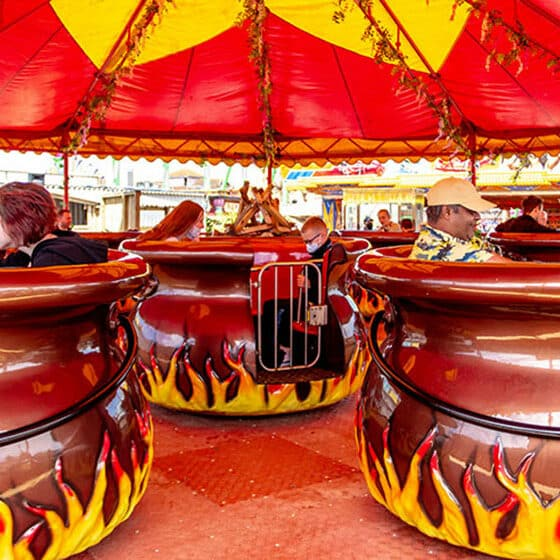

Type
Teacup Ride
Opened Here
2020
Price
£4.50
Included with Any Wristband
About this Ride
Firebowl opened in 2020 after nearly two decades of operation at Funland Hayling Island. This unique teacup-style ride features giant pot-themed vehicles that spin and twirl, creating an exciting family experience. The distinctive theming and smooth operation make it a popular attraction for guests of all ages.